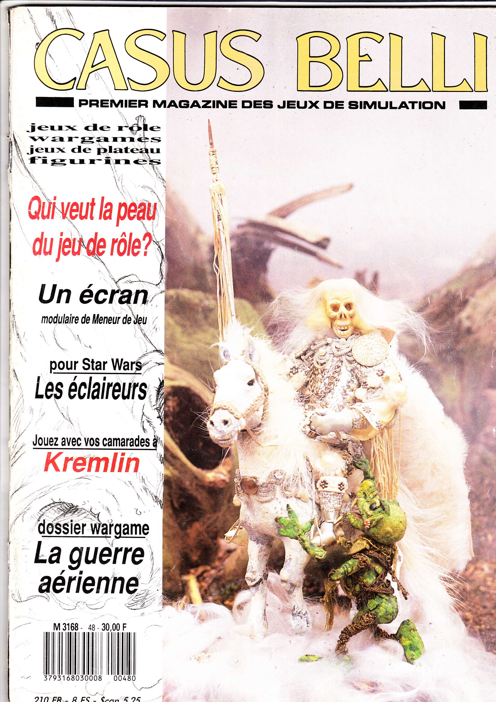

En route pour notre CB 48, qui vient donc clôturer cette année 1988 en couvrant le bimestre novembre – décembre. La couverture est signée Frédéric Desmare et Yoëlle, et plutôt que de mettre à l’honneur un illustrateur comme il est d’usage, c’est un montage photo – miniature qui est ici proposé.

En cette fin d’année, l’actualité sociale reste chargée en France : on continue à avoir de gros mouvements de grève, notamment dans les transports en commun. Fermeture de lignes de métro et de RER à proximité de la période de Noël, les franciliens serrent les dents sur ces mois de novembre et décembre, ou montent à bord des 365 camions de l’armée de terre réquisitionnés pour pallier les fermetures des RER A et B. Même si je vivais personnellement en banlieue parisienne à cette date, pas de gros souvenirs personnels de ces conflits, mon trajet domicile – collège se faisant à pied. Mais apparemment c’était épique et le retour à la normal se fera peu avant Noël et très progressivement vu l’état de blocage qui aura eu lieu.
Bien que le gouvernement soit repassé socialiste, c’est aussi le premier à suggérer après cette période d’agitation la mise en place d’un Service Minimum, manifestement pour relayer l’opinion publique de l’époque. Mais le jet de protection de Rocard pour ne pas basculer social-traître est aussi sauf : c’est à cette date que le même gouvernement socialiste instaure le RMI.
Sur le plan des médias, deux petits événements qui feront date :
- la création de la radio qu’on a tous écoutée au moins une fois même si on n’a pas les mêmes goûts musicaux : Autoroute FM
- et la création du CSA, avec des pouvoirs répressifs plus étendus que les Autorités audio-visuelles précédentes
Mais à côté des tracas du quotidien, c’est surtout l’actualité économique qui nourrit les journaux de cette fin d’année avec le début de l’Affaire Pechiney-Triangle. On est alors à la fin des années 1980 et des années fric déjà évoquées avec l’explosion des activités sur les marchés financiers, et la banalisation des OPA, surtout celles hostiles. Ici, il s’agit d’une opération amicale mais qui met à jour un délit d’initiés. Je garde personnellement un souvenir marqué de ce (premier ?) gros scandale politico-financier sur fond d’opérations financières douteuses, de stratégie industrielle erratique (Pechiney finira par disparaître), et de connivences entre les milieux d’affaires et politiques qui ne sont pas nouveaux mais qui commencent à éclater au grand jour, et ne plus être tolérés… Cette fin d’année 1988 marque d’ailleurs une certaine apothéose de ces années fric quand on dépasse les frontières de l’Hexagone : la banque Drexel Burnham Lambert et son trader star Michael Milken, spécialistes du marché très lucratif des junk bonds, se retrouvent devant les tribunaux tandis que le rachat du géant agro-alimentaire Nabisco avec le plus gros LBO jamais élaboré consacre la montée en puissance des fonds d’investissements.
Tout ceci alimente les jeux cyberpunk à venir, tout comme l’apparition du premier virus informatique de type Ver (Morris Worm), qui déstabilise un Internet certes encore balbutiant mais une informatisation désormais généralisée du monde professionnel.
Toujours de l’autre côté de l’Atlantique, si les Etatsuniens changent de président à cette date, il en est de même aussi pour les Mexicains mais après des élections controversées, qu’on retrouve dans la série Netflix Narcos, et qui achemine progressivement le pays vers son statut de narcocratie.
A l’autre bout de la planète, c’est le Pakistan qui surprend avec l’élection de Benazir Bhutto, première femme à la tête d’un Gouvernement dans ce pays musulman, qui est aussi à ce moment la base de départ des futurs talibans, maintenant que les troupes soviétiques ont quitté l’Afghanistan.
En Israël - Palestine, c’est encore et toujours les occasions de paix manquées : tandis qu’Arafat infléchit ses positions, Israël place à sa tête l’intransigeant Yitzhak Shamir. Tout ceci sert à nourrir de façon directe, mais le plus souvent de façon indirecte pour masquer un cynisme et des intérêts politiques, un terrorisme en provenance du Proche-Orient. En cette fin 1988, alors que Noël se profile, le ciel d’Ecosse se déchire le 21 décembre avec l’attentat aérien au-dessus de Lockerbie : 270 morts innocents, dont 11 habitants de la commune de Lockerbie s’il fallait encore ajouter à la tragédie. Terrorisme pour défendre la cause palestinienne ? représailles de l’Iran après la destruction accidentelle d’un avion civil et ses 290 victimes par la marine US quelques mois auparavant ? jeux troubles de la Syrie et de la Lybie ? Même si cette dernière reconnaîtra sa responsabilité au début du XXIème siècle, on ne sait pas encore toutes les implications…
Tout ceci reste encore en arrière-plan d’une Guerre Froide qui n’est pas terminée même si la détente amorcée par Gorbatchev est réelle : le Secrétaire Général du PCUS se trouve en décembre 1988 aux Etats-Unis pour se rendre aux Nations-Unies. Alors que dans son affrontement avec l’Ouest, Ronald Reagan termine son mandat comme le grand gagnant après avoir saigné à blanc l’économie soviétique, Gorbatchev est cependant au fait de sa popularité internationale, et vu comme le good guy essayant de promouvoir une paix planétaire, et entre deux bains de foule, un certain Donald Trump lui fait visiter la Trump Tower…
Mais ce voyage est écourté par une dernière tragédie d’ampleur qui vient clôturer cette année 1988. Après avoir commencé en Arménie avec le conflit avec l’Azerbaïdjan, l’année 1988 s’achève dans ce même petit pays du globe avec un tremblement de terre dévastateur qui cause 25 000 morts. Gorbatchev rentre précipitamment en URSS, la communauté internationale se mobilise, notamment en France sous l’égide de Charles Aznavour : est-ce que je vous remets en tête cette chanson de l’époque ?
Maintenant qu’elle tourne bien en boucle, il est temps de se plonger dans le Casus de ce dernier bimestre 1988. A côté de sa couverture inhabituelle, ce Casus porte aussi en tête de titre un manifeste : Qui veut la peau du jeu de rôle, écrit en lettres de sang, en écho à la panique morale importée des US et qui commence à prendre forme chez nous, avant le funeste épisode de Carpentras puis les émissions de télé-réalité des années 1990. L’édito explique la démarche en proposant un encart de 4 pages co-signé avec Chroniques d’Outre-Monde et Dragon Radieux. L’Union Sacrée est en marche, malheureusement avec une influence médiatique des plus limitées comme on le constatera amèrement quelques années plus tard.
Le document étant historique, il mérite que je vous le remette en relecture ici (on notera d’ailleurs que le terme rôliste ne s’est pas encore complètement imposé et qu’on trouve encore son concurrent rôleur écrit 😄 )
Spoiler:
Spoiler:
Spoiler:
Spoiler:
Comme on est en plein hiver, le calendrier ainsi que le débriefing des manifestations est assez sommaire. On pourra cependant s’intéresser, maintenant que la rubrique What’s your game from US / UK est officiellement arrêtée, aux retours qui sont faits sur le JDR en Espagne et sur la dernière édition du Salon du Jeu d’Essen en Allemagne. Ces quelques retours de conventions s’accompagnent d’un (gentil, on est dans Casus hein !) coup de griffe vers certains organisateurs qui témoignent de la lassitude des collaborateurs de Casus (je pense qu’il s’agissait surtout de Didier et Pierre) d’être invités et sacrifier leurs WE persos pour faire les plantes vertes dans des réunions de clubs de province…
Casus finit de dépiler son sondage maintenant que @Tristan a fini de tout dépouiller. Les conclusions sont assez semblables à ce qu’on pouvait dire dans le numéro précédent, notamment sur les proportions homme / femme, même si pour la gent féminine celle-ci est déterminée par rapport au nombre de joueurs masculins déclarant jouer en couple (forcément hétérosexuel). Les jeux plébiscités sont déjà les locomotives AD&D et Appel de Cthulhu, suivis par Stormbringer et JRTM. Casus salue cependant l’ouverture de son lectorat qui joue de plus en plus à plusieurs jeux (seuls 4% ne pratiquent que (A)D&D).
Au rayon des sorties, la période de Noël se précise donc avec pas mal d’annonces et de sorties à venir : Warhammer et MultiMondes respectivement chez les locomotive Descartes et Oriflam, ce dernier proposant aussi Le Voleur d’Âmes pour Stormbringer et les Dieux de Glorantha avec cette fin d’année. Chez Descartes, on trouvera Les Monstres de Cthulhu et Warhammer 1ère édition, ou encore Cœur Cruel pour Maléfices. Les annonces pour 1989 font aussi saliver : le encore très confidentiel Hurlements chez Dragon Radieux, du Paranoïa et du Star Wars (Le Guide) chez Descartes, qui annonce aussi Le Voile de Kali pour Maléfices qui ne paraîtra qu’à la fin de la décennie suivante, ou une campagne de création française pour Warhammer : on n’est pourtant pas le premier avril !
Les Têtes d’Affiche sont plus limitées, en attendant que toutes ces merveilles se retrouvent sous les sapins. On remarquera toujours la vitalité de Jorune (avec le supplément Earth-Tec Jorune), et les sorties sur Runequest qui laissent espérer un renouveau du jeu, malheureusement vite avorté : Glorantha – Geneterla, Crucible of the Hero Wars et Into the Troll Realms qui réédite une partie (congrue) du mythique Trollpak. TSR se concentre pour sa part sur la sortie du copieux jeu de plateau Buck Rogers qui marque donc la reprise de la firme par Lorraine Williams dans des directions très nouvelles, en attendant la 2ème édition d’AD&D encore en travaux. La tendance de l’époque est encore à explorer les futurs proches et plus lointains : 2300 AD pour GDW, dans le passé donc de Traveller dont la nouvelle édition Megatraveller est elle-même critiquée, et Space Master chez ICE pour ceux qui souhaitent un Rolemaster en version space opera. Pour les VF, il sera donc question du premier supplément pour Empires & Dynasties, et le mythique Zone+ accompagné de son disque 45 tours !
Contrairement au numéro précédent qui traitait de deux jeux similaires, les Epreuves du Feu sont ici consacrées à des jeux aussi éloignés que sont les VF de Hawkmoon et Marvel Super Héros. La première a les honneurs de Tristan, notamment pour souligner la qualité de la VF par rapport à la VO d’origine ; la seconde est écrite par le regretté Pierre Lejoyeux, avec quelques informations dans l’aide de jeu pour trouver des références encyclopédiques qui permettent d’épaissir le background de cette version TSR destinée originellement à un public US déjà très connaisseur, contrairement au public français…
Du côté SF et BD, la moisson de Noël se profile également. Roland Wagner nous chronique ainsi du Kim Stanley Robinson (le recueil de nouvelles La planète sur la table) ou Le Monde de la Terre Creuse qui va accoucher prochainement d’un jeu de rôle. Il est aussi question de la bibliographie de Moorcock avec la sortie de Corum chez un nouvel éditeur nantais : L’Atalante ! Enfin, la parution de Sur des mers plus ignorées de Tim Powers invite Casus à lancer un appel prémonitoire pour en créer un jeu de rôle, ce qui donnera Capitaine Vaudou quelques années plus tard !
Du côté d’André Foussat, on retrouve quelques valeurs sûres : Le Mercenaire (tome 4), Le Vent des Dieux (tome 4), L’Incal (tome VI) et Avant L’Incal, Valérian et Laureline (tome 13). Marvel Super Héros étant mis à l’honneur, on retrouvera aussi du comics en VF : Les Gardiens, Spiderman, Batman. Plus confidentiel mais qui m’a donné envie de m’y intéresser puisque c’est trouvable pour une bouchée de pain : Sanguine, recommandé dans ce Casus pour faire du Trois Mousquetaires, mais qui semble encore plus approprié pour du Te Deum pour un massacre.
L’encart scénarios offre la curieuse exception (à ma connaissance) de comporter avec ce numéro deux scénarios pour JRTM ! Tant mieux parce que ça permet d’avoir deux productions très différentes. Le premier est écrit par Anne Vétillard, toujours avec la même veine d’écriture qu’avec le scénario du numéro 46 : c’est inspiré, poétique, et forcément un peu rigide. L’autre, signé par Philippe Rochas, est plus conventionnel : une enquête urbaine se déroulant à Tharbad sur fond de trahisons. Ceci est complété par deux courts scénarios (2 pages chacun) pour les jeux de l’EdF : une production Hawkmoon donc par Tristan se situant en Kamarg avec des gitans du Tragique Millénaire qui donne une petite enquête, peut-être un peu trop expéditive en raison de la pagination réduite pour m’avoir complètement emballé ; et un Marvel Super Héros par Pierre (Lejoyeux), lui-même sans grand relief mais à découvrir à l’occasion pour faire du super héros sur une base simple. Enfin, un scénario AD&D du prolifique Denis Beck à l’époque et toujours localisé à Laelith (L’Ambassadeur) : clairement pas le meilleur de sa production, même si toute une partie se déroule dans le Cloaque (mais est précédée d’une partie précédente où la latitude d’action des PJ est particulièrement entravée).
Ce matériel est complété par une aide de jeu Star Wars sur le thème des Eclaireurs en attendant les suppléments officiels à paraître des années plus tard : le Galaxy Guide Scouts pour Star Wars WEG, puis Horizons Lointains pour la version FFG. Cet article copieux (4 pages tout de même) a l’originalité par rapport aux productions officielles de loucher fortement vers Star Trek, et la SF en général à l’image des 3 inspis scénarios qui sont proposées. Bref, c’est intéressant mais assez éloigné de ce qui paraîtra ensuite dans les productions officielles.
La partie Jeu de Plateau / Wargame est assez éclectique. Elle s’ouvre sur Kremlin d’Avalon Hill, qui simule de façon ironique et visionnaire un système soviétique à bout de souffle (avec comme but d’avoir ses caciques du PCUS suffisamment en bonne santé ou non purgés pour pouvoir saluer lors du défilé sur la Place Rouge). Avec les nouveaux moyens informatiques et télématiques de la fin de cette décennie 1980, Casus s’intéresse aussi aux jeux par correspondance : 3615 Fief, ou Duelmasters et dont la gestion par courrier semble souffrir du contexte des conflits sociaux évoqués de cette fin d’année 1988 en France.
Pour les wargames, Casus consacre une page timide à la parution d’ASL pour surtout l’inscrire dans la continuité de Squad Leader. Pas de jeu en encart pour ce bimestre pour cause notamment de manifeste de défense du JDR, mais un gros dossier sur le combat aérien moderne et les avions de chasse, après le dossier sur les hélicoptères du numéro précédent. Casus entreprend, outre le dossier consacré à l’arme aérienne, de faire un comparatif savant des wargames existants du marché : Air War, Flight Leader et Air Supeiority. Et pour que le tout soit complet, on trouvera aussi une aide de jeu et des scénarios pour Air Force. Tout ceci paraît assez daté car il me semble que ces wargames tri-dimensionnels ont ensuite été emportés rapidement par la révolution informatique.
Sur la partie Ludotique justement, celle-ci existe donc encore avec la volonté de Casus de se concentrer sur les jeux les plus proches du hobby : wargame ou jeu d’aventure sous format de quête élaborée. Un petit encart vient donc mettre un coup de griffe en direction des revues plus généralistes (c’est Tilt qui est ciblé) qui emploie le terme jeu de rôle pour l’appliquer n’importe comment aux jeux, notamment d’arcade. La croisade du dossier ne se limite donc pas seulement aux journaux à articles à sensation !
On terminera cette revue Casus avec un petit mot sur la publicité des années 1980, qui à l’égal de la finance et des traders, est restée un des symboles de cette époque avec ses clips de plus en plus décalés et barrés, par rapport aux anciennes réclames. Je me moquais dans les numéros précédents des publicités so 80’s des Fils de le Terre pour des boîtes d’allumettes, et qui servaient de background (!) pour un concours basé sur un jeu grandeur-nature. Mais le sens inverse se vérifie avec l’incursion de Jeux Descartes dans des publicités tout aussi décalées et incongrues : c’est en effet dans ce numéro que les publicités avec des figurants peints de façon très cheap, et les onomatopées échappés de la série TV Batman apparaissent et viennent peupler en nombre les pages.
Spoiler:
Spoiler:
Au final, un bon petit Casus avec pas mal de matériel de jeu de rôle. A découvrir pour l’aspect ludique et historique avec son encart de défense du jeu de rôle !